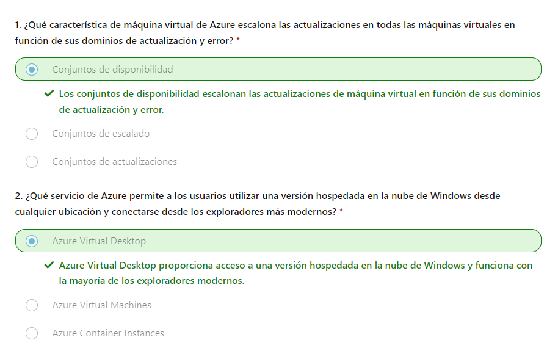

En este módulo, se le presentarán los servicios de proceso y redes de Azure. Obtendrá información sobre tres de las opciones de proceso (máquinas virtuales, contenedores y funciones de Azure). También obtendrá información sobre algunas de las características de red, como redes virtuales de Azure, Azure DNS y Azure ExpressRoute.
Con Azure Virtual Machines (VM), puedes crear y usar máquinas virtuales en la nube. Estas máquinas virtuales proporcionan una infraestructura como servicio (IaaS) en forma de un servidor virtualizado y se pueden usar de muchas formas. Como sucede en un equipo físico, puedes personalizar todo el software que se ejecuta en la máquina virtual. Las máquinas virtuales son una opción ideal cuando necesitas lo siguiente:
Una máquina virtual de Azure te ofrece la flexibilidad de la virtualización sin necesidad de adquirir y mantener el hardware físico que ejecuta la máquina virtual. Pero, como oferta de IaaS, tendrá que configurar, actualizar y mantener el software que se ejecuta en la máquina virtual. Incluso puedes crear o usar una imagen ya creada para aprovisionar rápidamente máquinas virtuales. Al seleccionar una imagen de máquina virtual preconfigurada, podrás crear y aprovisionar una máquina virtual en cuestión de minutos. Una imagen es una plantilla que se usa para crear una máquina virtual y puede que ya incluya un sistema operativo y otro software, como herramientas de desarrollo o entornos de hospedaje web.
Se pueden ejecutar máquinas virtuales únicas para pruebas, desarrollo o tareas secundarias. También se pueden agrupar las máquinas virtuales para proporcionar alta disponibilidad, escalabilidad y redundancia. Azure también puede administrar la agrupación de máquinas virtuales con características como conjuntos de escalado y conjuntos de disponibilidad.
Los conjuntos de escalado de máquinas virtuales permiten crear y administrar un grupo de máquinas virtuales idénticas, de carga equilibrada. Si simplemente ha creado varias máquinas virtuales con el mismo propósito, tendría que asegurarse de que todas se han configurado de forma idéntica y, después, configurar parámetros de enrutamiento de red para garantizar la eficacia. También tendría que supervisar el uso para determinar si necesita aumentar o disminuir el número de máquinas virtuales. En su lugar, con los conjuntos de escalado de máquinas virtuales, Azure automatiza la mayor parte de ese trabajo. Los conjuntos de escalado le permiten administrar, configurar y actualizar de forma centralizada un gran número de máquinas virtuales en cuestión de minutos. El número de instancias de máquina virtual puede aumentar o disminuir automáticamente según la demanda, o bien puede establecerlo para que se escale en función de una programación definida. Los conjuntos de escalado de máquinas virtuales también implementan automáticamente un equilibrador de carga para asegurarse de que los recursos se usan de forma eficaz. Con los conjuntos de escalado de máquinas virtuales, puede crear servicios a gran escala para áreas como proceso, macrodatos y cargas de trabajo de contenedor.
Los conjuntos de disponibilidad de máquinas virtuales son otra herramienta que le ayudará a crear un entorno más resistente y de alta disponibilidad. Los conjuntos de disponibilidad están diseñados para garantizar que las máquinas virtuales escalen las actualizaciones y tengan una conectividad de red y potencia variadas, lo que evita que se pierdan todas las máquinas virtuales debido a un solo fallo de energía o de la red. Los conjuntos de disponibilidad lo hacen mediante la agrupación de las máquinas virtuales de dos maneras: dominio de actualización y dominio de error.
Lo mejor de todo es que la configuración de un conjunto de disponibilidad no supone ningún costo adicional. Solo paga por las instancias de máquina virtual que cree.
Las máquinas virtuales también son una opción excelente cuando se mueve de un servidor físico a la nube (también conocido como Lift-and-shift). Puedes crear una imagen del servidor físico y hospedarla en una máquina virtual con pocos o ningún cambio. Al igual que un servidor local físico, debes mantener la máquina virtual: es responsable de mantener el sistema operativo y el software instalados.
Al aprovisionar una máquina virtual, también tendrás la oportunidad de elegir los recursos asociados a esa máquina virtual, como los siguientes:
En este ejercicio, crearás una máquina virtual (VM) de Azure e instalará Nginx, un servidor web popular. Por ejemplo, puedes usar Azure Portal, la CLI de Azure, Azure PowerShell o una plantilla de Azure Resource Manager (ARM). En este caso, vas a usar la CLI de Azure.
Usa los siguientes comandos de la CLI de Azure para crear una máquina virtual Linux e instalar Nginx. Una vez creada la máquina virtual, usará la extensión de script personalizado para instalar Nginx. La extensión de script personalizado es una manera fácil de descargar y ejecutar scripts en máquinas virtuales de Azure. Solo es una de las numerosas formas de configurar el sistema después de que la máquina virtual esté en funcionamiento.
az vm create \
--resource-group "learn-2a435d14-725d-458c-b6e2-c94e2e41b8c0" \
--name my-vm \
--public-ip-sku Standard \
--image Ubuntu2204 \
--admin-username azureuser \
--generate-ssh-keys
La máquina virtual tardará unos minutos en aparecer. Ha asignado el nombre my-vm a la máquina virtual. Use este nombre para hacer referencia a la máquina virtual en los pasos posteriores.
az vm extension set \
--resource-group "learn-2a435d14-725d-458c-b6e2-c94e2e41b8c0" \
--vm-name my-vm \
--name customScript \
--publisher Microsoft.Azure.Extensions \
--version 2.1 \
--settings '{"fileUris":["https://raw.githubusercontent.com/MicrosoftDocs/mslearn-welcome-to-azure/master/configure-nginx.sh"]}' \
--protected-settings '{"commandToExecute": "./configure-nginx.sh"}'
Este comando usa la extensión de script personalizado para ejecutar un script de Bash en la máquina virtual. El script se almacena en GitHub. Mientras se ejecuta el comando, puede optar por examinar el script de Bash en una pestaña independiente del explorador. Para resumir, el script:
Otro tipo de máquina virtual es Azure Virtual Desktop. Azure Virtual Desktop es un servicio de virtualización de escritorios y aplicaciones que se ejecuta en la nube. Te permite usar una versión hospedada en la nube de Windows desde cualquier ubicación. Azure Virtual Desktop funciona en dispositivos y sistemas operativos, y funciona con aplicaciones que puede usar para acceder a escritorios remotos o a la mayoría de exploradores modernos. En el vídeo siguiente te ofrece una introducción sobre Azure Virtual Desktop:
videoAzure Virtual Desktop proporciona administración centralizada de seguridad para los escritorios de los usuarios con Microsoft Entra ID. Puedes habilitar la autenticación multifactor para proteger los inicios de sesión de los usuarios. También puedes proteger el acceso a los datos mediante la asignación a los usuarios de controles de acceso basados en roles (RBAC) detallados. Con Azure Virtual Desktop, los datos y las aplicaciones se separan del hardware local y El escritorio y las aplicaciones reales se ejecutan en la nube, lo que significa que se reduce el riesgo de dejar datos confidenciales en un dispositivo personal. Además, las sesiones de usuario están aisladas en entornos de una o varias sesiones.
azure Virtual Desktop permite usar la sesión múltiple de Windows 10 o Windows 11 Enterprise, el único sistema operativo basado en cliente de Windows que permite varios usuarios simultáneos en una sola máquina virtual. Azure Virtual Desktop también proporciona una experiencia más coherente gracias a la compatibilidad más amplia con las aplicaciones en comparación con los sistemas operativos basados en Windows Server.
A pesar de que las máquinas virtuales son una excelente manera de reducir los costos frente a las inversiones que son necesarias para el hardware físico, están limitadas a un solo sistema operativo por máquina virtual. Los contenedores son una excelente opción si quiere ejecutar varias instancias de una aplicación en un solo equipo host.
Los contenedores son un entorno de virtualización. Al igual que la ejecución de varias máquinas virtuales en un solo host físico, se pueden ejecutar varios contenedores en un solo host físico o virtual. A diferencia de las máquinas virtuales, no se administra el sistema operativo de un contenedor. Las máquinas virtuales son similares a una instancia de sistema operativo que se puede conectar y administrar. Los contenedores son ligeros y se han diseñado para crearse, escalarse horizontalmente y detenerse de forma dinámica. Es posible crear e implementar máquinas virtuales a medida que aumenta la demanda de aplicaciones, pero los contenedores son un método más ligero y ágil. Los contenedores están diseñados para permitirle responder a petición a los cambios. Con los contenedores puede reiniciar rápidamente en caso de bloqueo o interrupción del hardware. Uno de los motores de contenedores más populares es Docker. Y Azure es compatible con Docker.
En el vídeo siguiente se resaltan algunas de las diferencias importantes entre las máquinas virtuales y los contenedores:
videoAzure Container Instances ofrece la forma más rápida y sencilla de ejecutar un contenedor en Azure sin tener que administrar máquinas virtuales o adoptar servicios adicionales. Azure Container Instances es una oferta de plataforma como servicio (PaaS). Azure Container Instances le permite cargar los contenedores. A continuación, el servicio ejecutará los contenedores por usted.
Azure Container Apps son similares de muchas maneras a una instancia de contenedor. Le permiten ponerse en marcha de inmediato, quitan la pieza de administración de contenedores y son una oferta de PaaS. Container Apps tienen ventajas adicionales, como la capacidad de incorporar el equilibrio de carga y el escalado. Estas otras funciones le permiten ser más elásticas en el diseño.
Azure Kubernetes Service (AKS) es un servicio de orquestación de contenedores. Un servicio de orquestación administra el ciclo de vida de los contenedores. Al implementar una flota de contenedores, AKS puede hacer que la administración de flotas sea más sencilla y eficaz.
Los contenedores se usan normalmente para crear soluciones mediante una arquitectura de microservicios. Esta arquitectura es donde se dividen las soluciones en partes más pequeñas e independientes. Por ejemplo, se puede dividir un sitio web en un contenedor que hospeda el front-end, otro que hospeda el back-end y un tercero para el almacenamiento. De esta forma, puede separar partes de la aplicación en secciones lógicas que se pueden mantener, escalar o actualizar independientemente. Imagine que el back-end de su sitio web ha alcanzado el límite de su capacidad, pero el front-end y el almacenamiento no están sobrecargados. Con los contenedores puede escalar el back-end por separado para mejorar el rendimiento. Si algo requiere este cambio, también puede optar por cambiar el servicio de almacenamiento o modificar el front-end sin afectar a ninguno de los otros componentes.
Azure Functions es una opción de proceso sin servidor controlada por eventos que no necesita el mantenimiento de máquinas virtuales ni contenedores. Si compila una aplicación mediante máquinas virtuales o contenedores, esos recursos deben "ejecutarse" para que la aplicación funcione. Con Azure Functions, un evento activa la función, lo que reduce la necesidad de mantener los recursos aprovisionados cuando no hay ningún evento.
El uso de Azure Functions es idóneo si solo le interesa el código que ejecuta el servicio y no la infraestructura o la plataforma subyacente. Las funciones se usan normalmente cuando se debe realizar un trabajo en respuesta a un evento (a menudo a través de una solicitud REST), un temporizador o un mensaje de otro servicio de Azure, y cuando ese trabajo puede completarse rápidamente, en segundos o en menos tiempo. Functions se escala automáticamente según la demanda, por lo que es una opción correcta cuando la demanda es variable. Azure Functions ejecuta el código cuando se desencadena y desasigna recursos automáticamente cuando la función finaliza. En este modelo, solo se le cobrará por el tiempo de CPU usado mientras se ejecuta la función. Las funciones pueden ser sin estado o con estado. Cuando son sin estado (valor predeterminado), se comportan como si se reiniciaran cada vez que responden a un evento. Cuando son con estado (denominado Durable Functions), se pasa un contexto a través de la función para realizar el seguimiento antes de la actividad. Las funciones son un componente clave de la informática sin servidor. También son una plataforma de proceso general para ejecutar cualquier tipo de código. Si cambian las necesidades de la aplicación del desarrollador, se puede implementar el proyecto en un entorno que no sea sin servidor. Esta flexibilidad permite administrar el escalado, ejecutar en redes virtuales e incluso aislar por completo las funciones.
Si necesita hospedar la aplicación en Azure, es posible que cambie inicialmente a una máquina virtual (VM) o a contenedores. Tanto las máquinas virtuales como los contenedores proporcionan excelentes soluciones de hospedaje. Las máquinas virtuales proporcionan el máximo control del entorno de hospedaje y le permiten configurarlo exactamente como desea. Las máquinas virtuales también pueden ser el método de hospedaje más conocido si no está familiarizado con la nube. Los contenedores, con la capacidad de aislar y administrar individualmente diferentes aspectos de la solución de hospedaje, también pueden ser una opción sólida y atractiva. Hay otras opciones de hospedaje que puede usar con Azure, incluido Azure App Service.
App Service permite crear y hospedar aplicaciones web, trabajos en segundo plano, back-ends móviles y API RESTful en el lenguaje de programación que prefiera, sin tener que administrar la infraestructura. Ofrece escalado automático y alta disponibilidad. App Service admite Windows y Linux. Permite implementaciones automatizadas desde GitHub, Azure DevOps o cualquier repositorio Git para admitir un modelo de implementación continua. Azure App Service es una opción de hospedaje sólida que puede usar para hospedar las aplicaciones en Azure. Azure App Service le permite centrarse en la creación y el mantenimiento de la aplicación, y Azure se centra en mantener el entorno en funcionamiento. Azure App Service es un servicio basado en HTTP para hospedar aplicaciones web, API de REST y back-ends para dispositivos móviles. Admite varios lenguajes, incluidos .NET, .NET Core, Java, Ruby, Node.js, PHP o Python. También admite entornos de Windows y Linux.
App Service controla la mayoría de las decisiones sobre la infraestructura que se tratan en el hospedaje de aplicaciones accesibles desde la web:
Todos estos estilos de aplicación se hospedan en la misma infraestructura y comparten estas ventajas. Esto convierte a App Service en la elección ideal para hospedar aplicaciones orientadas a la web.
App Service incluye compatibilidad completa para hospedar aplicaciones web mediante ASP.NET, ASP.NET Core, Java, Ruby, Node.js, PHP o Python. Puede elegir Windows o Linux como sistema operativo del host.
Al igual que al hospedar un sitio web, puede compilar API web basadas en REST mediante el lenguaje y el marco que prefiera. Se obtiene compatibilidad completa con Swagger y la posibilidad de empaquetar y publicar la API en Azure Marketplace. Las aplicaciones producidas se pueden consumir desde cualquier cliente basado en HTTP o HTTPS.
Se puede usar la característica WebJobs para ejecutar un programa (.exe, Java, PHP, Python o Node.js) o un script (.cmd, .bat, PowerShell o Bash) en el mismo contexto que una aplicación web, aplicación de API o aplicación móvil. Los puede programar o ejecutar un desencadenador. Los trabajos web suelen usarse para ejecutar tareas en segundo plano como parte de la lógica de aplicación.
Use la característica Mobile Apps de App Service a fin de compilar rápidamente un back-end para aplicaciones iOS y Android. Con unos pocos clics en el Portal de Azure, puede realizar lo siguiente:
Las redes virtuales y las subredes virtuales de Azure permiten a los recursos de Azure, como las máquinas virtuales, las aplicaciones web y las bases de datos, comunicarse entre sí, con los usuarios de Internet y con los equipos cliente en el entorno local. Una red de Azure se puede considerar una extensión de la red local con recursos que vinculan otros recursos de Azure. Las redes virtuales de Azure proporcionan las importantes funcionalidades de red siguientes:
Las redes virtuales de Azure admiten puntos de conexión públicos y privados para permitir la comunicación entre recursos externos o internos con otros recursos internos.
La red virtual de Azure permite crear varias redes virtuales aisladas. Al configurar una red virtual, se define un espacio de direcciones IP privadas con intervalos de direcciones IP públicas o privadas. El intervalo IP solo existe dentro de la red virtual y no es enrutable en Internet. Después, puede dividir ese espacio de direcciones IP en subredes y asignar parte del espacio de direcciones definido a cada subred con nombre. Para la resolución de nombres, puede usar el servicio de resolución de nombres integrado en Azure. También puede configurar la red virtual para que use un servidor DNS interno o externo.
Puede permitir conexiones entrantes desde Internet mediante la asignación de una dirección IP pública a un recurso de Azure o la colocación del recurso detrás de un equilibrador de carga público.
Le interesará habilitar los recursos de Azure para que se comuniquen entre sí de forma segura. Puede hacerlo de dos maneras:
Las redes virtuales de Azure permiten vincular entre sí los recursos del entorno local y dentro de la suscripción de Azure. De hecho, puede crear una red que abarque tanto el entorno local como el entorno en la nube. Existen tres mecanismos para lograr esta conectividad:
De forma predeterminada, Azure enruta el tráfico entre las subredes de todas las redes virtuales conectadas, las redes locales e Internet. También puede controlar el enrutamiento e invalidar esa configuración del siguiente modo:
Las redes virtuales de Azure permiten filtrar el tráfico entre las subredes mediante los métodos siguientes:
Puede vincular redes virtuales entre sí mediante el emparejamiento de red virtual. El emparejamiento permite que dos redes virtuales se conecten directamente entre sí. El tráfico de red entre redes emparejadas es privado y se desplaza por la red troncal de Microsoft, y nunca entra en la red pública de Internet. El emparejamiento permite que los recursos de cada red virtual se comuniquen entre sí. Estas redes virtuales pueden estar en regiones distintas, lo que permite crear una red global interconectada con Azure. Las rutas definidas por el usuario (UDR) permiten controlar las tablas de enrutamiento entre subredes dentro de una red virtual o entre redes virtuales. Esto permite un mayor control sobre el flujo de tráfico de red.
Para comprobar que la máquina virtual que creó anteriormente todavía se está ejecutando, use el siguiente comando:
az vm list
Si recibe una respuesta vacía [], debe completar de nuevo el primer ejercicio de este módulo. Si el resultado muestra la máquina virtual actual y su configuración, puede continuar. En este momento, la máquina virtual que ha creado y en la que ha instalado Nginx no es accesible desde Internet. Crearás un grupo de seguridad de red que lo cambiará y permitirá el acceso HTTP de entrada en el puerto 80.
En este procedimiento se obtiene la dirección IP de la máquina virtual y se intenta acceder a la página principal del servidor web.
IPADDRESS="$(az vm list-ip-addresses --resource-group "learn-0b1868b3-ae11-4882-821f-fbbc0143c303"
--name my-vm --query "[].virtualMachine.network.publicIpAddresses[*].ipAddress" --output tsv)"
curl --connect-timeout 5 http://$IPADDRESS
El argumento --connect-timeout especifica que se conceden hasta cinco segundos para que se produzca la conexión. Después de cinco segundos, verás un mensaje de error que indica que se ha agotado el tiempo de espera de la conexión:
Ejecuta lo siguiente para imprimir la dirección IP de la máquina virtual en la consola:
echo $IPADDRESS
Copia en el portapapeles la dirección IP que vea. Abre una nueva pestaña del explorador y vayas al servidor web. Transcurridos unos instantes, verás que la conexión no se está produciendo. Si esperas a que se agote el tiempo de espera del explorador, verás algo parecido a esto:
az network nsg list --resource-group "learn-0b1868b3-ae11-4882-821f-fbbc0143c303"
--query '[].name' --output tsv
Cada máquina virtual de Azure está asociada a, al menos, un grupo de seguridad de red. En este caso, Azure te creó un grupo de seguridad de red denominadomy-vmNSG.
az network nsg rule list \
--resource-group "learn-0b1868b3-ae11-4882-821f-fbbc0143c303" \
--nsg-name my-vmNSG
Verás un bloque grande de texto en formato JSON en la salida. En el paso siguiente, ejecutarás un comando similar que facilita la lectura de este resultado.
az network nsg rule list --resource-group "learn-0b1868b3-ae11-4882-821f-fbbc0143c303"
--nsg-name my-vmNSG --query '[].{Name:name, Priority:priority, Port:destinationPortRange, Access:access}'
--output table
Verás la regla predeterminada default-allow-ssh. Esta regla permite conexiones entrantes a través del puerto 22 (SSH).
SSH (Secure Shell) es un protocolo que se usa en Linux para permitir que los administradores accedan
al sistema de forma remota. La prioridad de esta entrada es 1000.
Las reglas se procesan en orden de prioridad, donde los números más bajos se procesan antes que los números más altos.
De forma predeterminada, un grupo de seguridad de red de una máquina virtual de una máquina virtual Linux solo permite el acceso a la red en el puerto 22. Esto permite que los administradores accedan al sistema. También debe permitir las conexiones entrantes en el puerto 80, que permite el acceso a través de HTTP.
En este caso, crearás una regla de seguridad de red que permita el acceso de entrada en el puerto 80 (HTTP).
az network nsg rule create --resource-group "learn-0b1868b3-ae11-4882-821f-fbbc0143c303"
--nsg-name my-vmNSG --name allow-http --protocol tcp --priority 100 --destination-port-range 80 --access Allow
Con fines de aprendizaje, aquí establecerá la prioridad en 100. En este caso, la prioridad no importa. Tendriás que tener en cuenta la prioridad si tuvieras intervalos de puertos superpuestos
az network nsg rule list --resource-group "learn-0b1868b3-ae11-4882-821f-fbbc0143c303"
--nsg-name my-vmNSG --query '[].{Name:name, Priority:priority, Port:destinationPortRange, Access:access}' --output table
curl --connect-timeout 5 http://$IPADDRESS
Buen trabajo. En la práctica, puedes crear un grupo de seguridad de red independiente que incluya las reglas de acceso de red entrantes y salientes que necesite. Si tienes varias máquinas virtuales que tienen el mismo propósito, puedes asignar ese grupo de seguridad de red a cada máquina virtual en el momento de crearla. Esta técnica permite controlar el acceso de red a varias máquinas virtuales en un único conjunto central de reglas.
El espacio aislado limpia los recursos automáticamente cuando haya terminado con este módulo. Al trabajar en una suscripción propia, se recomienda identificar al final de un proyecto si aún necesita los recursos creados. Los recursos que dejas en ejecución pueden costar dinero. Puede eliminar los recursos de forma individual o eliminar el grupo de recursos para eliminar todo el conjunto de recursos.
Una red privada virtual (VPN) usa un túnel cifrado en otra red. Normalmente, las VPN se implementan para conectar entre sí dos o más redes privadas de confianza a través de una red que no es de confianza (normalmente, la red pública de Internet). El tráfico se cifra mientras viaja por la red que no es de confianza para evitar ataques de interceptación o de otro tipo. Las VPN pueden permitir que las redes compartan información confidencial de forma segura.
Una puerta de enlace de VPN es un tipo de puerta de enlace de red virtual. Las instancias de Azure VPN Gateway se implementan en una subred dedicada de la red virtual y permiten la conectividad siguiente:
Todas las transferencias de datos se cifran en un túnel privado mientras atraviesan Internet. Solo se puede implementar una única instancia de puerta de enlace de VPN en cada red virtual. Sin embargo, se puede usar una puerta de enlace para conectarse a varias ubicaciones, que incluye otras redes virtuales o centros de datos locales. Al configurar una instancia de VPN Gateway, debe especificar el tipo de red privada virtual, es decir, basada en directivas o basada en rutas. La distinción principal entre estos dos tipos es cómo determinan qué tráfico necesita cifrado. En Azure, independientemente del tipo de red privada virtual, el método de autenticación que se emplea es una clave previamente compartida.
Si necesita alguno de los siguientes tipos de conectividad, use una instancia de VPN Gateway basada en rutas:
Si va a configurar una VPN para mantener la información segura, también querrá asegurarse de que es una configuración de VPN de alta disponibilidad y tolerante a errores. Hay varias maneras de maximizar la resistencia de la puerta de enlace de VPN.
De forma predeterminada, las instancias de VPN Gateway se implementan como dos instancias en una configuración de activo-en espera, incluso si solo ve un recurso de VPN Gateway en Azure. Cuando el mantenimiento planeado o la interrupción imprevista afectan a la instancia activa, la instancia en espera asume de forma automática la responsabilidad de las conexiones sin ninguna intervención del usuario. Durante esta conmutación por error, las conexiones se interrumpen, pero por lo general se restauran en cuestión de segundos si se trata del mantenimiento planeado y en un plazo de 90 segundos en el caso de las interrupciones imprevistas.
Al incorporar compatibilidad con el protocolo de enrutamiento de BGP, también puede implementar puertas de enlace VPN en una configuración del tipo activo/activo. En esta configuración, se asigna una IP pública única a cada instancia. Después, se crean túneles independientes desde el dispositivo local a cada dirección IP. Se puede ampliar la alta disponibilidad mediante la implementación de un dispositivo VPN local adicional.
Otra opción de alta disponibilidad consiste en configurar una instancia de VPN Gateway como una ruta segura de conmutación por error para las conexiones ExpressRoute. Los circuitos ExpressRoute tienen resistencia integrada. Sin embargo, no son inmunes a los problemas físicos que afectan a los cables que entregan conectividad ni a las interrupciones que afectan a la ubicación completa de ExpressRoute. En escenarios de alta disponibilidad, en los que existe un riesgo asociado a una interrupción de un circuito ExpressRoute, también puede aprovisionar una instancia de VPN Gateway que usa Internet como un método alternativo de conectividad. De este modo, puede garantizar que siempre haya una conexión a las redes virtuales.
En las regiones que admiten zonas de disponibilidad, se pueden implementar puertas de enlace VPN y ExpressRoute en una configuración con redundancia de zona. Esta configuración aporta una mayor disponibilidad, escalabilidad y resistencia a las puertas de enlace de red virtual. Implementar puertas de enlace en Azure Availability Zones separa de forma física y lógica las puertas de enlace dentro de una región, al mismo tiempo que protege la conectividad de red local en Azure de errores de nivel de zona. Estas puertas de enlace requieren diferentes referencias de almacén (SKU) de puerta de enlace y usan direcciones IP públicas estándar en lugar de direcciones IP públicas básicas.
ExpressRoute le permite ampliar las redes locales a la nube de Microsoft mediante una conexión privada con la ayuda de un proveedor de conectividad. Esta conexión se denomina circuito ExpressRoute. Con ExpressRoute, puede establecer conexiones con servicios en la nube de Microsoft, como Microsoft Azure y Microsoft 365. Esto le permite conectar oficinas, centros de datos u otras instalaciones a la nube de Microsoft. Cada ubicación tendría su propio circuito ExpressRoute. La conectividad puede ser desde una red de conectividad universal (IP VPN), una red Ethernet de punto a punto o una conexión cruzada virtual a través de un proveedor de conectividad en una instalación de ubicación compartida. Las conexiones de ExpressRoute no pasan por la red pública de Internet. Esto permite a las conexiones de ExpressRoute ofrecer más confiabilidad, más velocidad, latencia coherentes y mayor seguridad que las conexiones normales a través de Internet.
ExpressRoute permite el acceso directo a los siguientes servicios en todas las regiones:
Puede permitir que Global Reach de ExpressRoute intercambie datos entre los sitios locales si conecta los diferentes circuitos ExpressRoute. Por ejemplo, supongamos que tiene una oficina en Asia y un centro de datos en Europa, ambos con circuitos ExpressRoute que los conectan a la red de Microsoft. Puede usar Global Reach de ExpressRoute para conectar esas dos instalaciones, lo que les permite comunicarse sin transferir datos a través de la red pública de Internet.
ExpressRoute usa el BGP. BGP se usa para intercambiar rutas entre las redes locales y los recursos que se ejecutan en Azure. Este protocolo permite el enrutamiento dinámico entre la red local y los servicios que se ejecutan en la nube de Microsoft.
Cada proveedor de conectividad usa dispositivos redundantes para garantizar que las conexiones establecidas con Microsoft tengan alta disponibilidad. Puede configurar varios circuitos para complementar esta característica.
La ubicación conjunta hace referencia al centro de datos, la oficina u otras instalaciones que se encuentran físicamente en un intercambio en la nube, como un ISP. Si la instalación tiene la ubicación compartida en un intercambio en la nube, puede solicitar una conexión cruzada virtual a la nube de Microsoft.
La conexión Ethernet de punto a punto hace referencia al uso de una conexión punto a punto para conectar la instalación a la nube de Microsoft.
Con la conectividad universal, puede integrar la red de área extensa (WAN) con Azure si proporciona conexiones a las oficinas y los centros de datos. Azure se integra con la conexión WAN para proporcionarle una conexión, como la que tendría entre el centro de datos y las sucursales.
Puede conectarse directamente a la red global de Microsoft en una ubicación de emparejamiento distribuida estratégicamente por todo el mundo. ExpressRoute Direct proporciona conectividad dual de 100 Gbps o 10 Gbps, que es compatible con la conectividad activa/activa a escala.
Con ExpressRoute los datos no viajan a través de la red pública de Internet y, por tanto, no se exponen a los posibles riesgos asociados a las comunicaciones de Internet. ExpressRoute es una conexión privada de la infraestructura local a la infraestructura de Azure. Incluso si tiene una conexión ExpressRoute, las consultas de DNS, la comprobación de la lista de revocación de certificados y las solicitudes de Azure Content Delivery Network se siguen enviando a través de la red pública de Internet.
Azure DNS es un servicio de hospedaje para dominios DNS que ofrece resolución de nombres mediante la infraestructura de Microsoft Azure. Al hospedar dominios en Azure, puede administrar los registros DNS con las mismas credenciales, API, herramientas y facturación que con los demás servicios de Azure.
Los dominios DNS de Azure DNS se hospedan en la red global de servidores de nombres DNS de Azure, y proporcionan resistencia y alta disponibilidad. Azure DNS usa redes de difusión por proximidad para que el servidor DNS más próximo disponible responda a cada consulta de DNS para proporcionar un mejor rendimiento y una mayor disponibilidad para el dominio.
Azure DNS puede administrar registros DNS para los servicios de Azure y también proporciona el servicio de nombres de dominio para los recursos externos. Azure DNS está integrado en Azure Portal y usa las mismas credenciales, la misma facturación y el mismo contrato de soporte técnico que los demás servicios de Azure. Como Azure DNS se ejecuta en Azure, significa que puede administrar los dominios y registros con Azure Portal, cmdlets de Azure PowerShell y la CLI de Azure multiplataforma. Las aplicaciones que requieren la administración automática de DNS se pueden integrar con el servicio mediante las API REST y los SDK.
Azure DNS es compatible con dominios DNS privados. Esta característica permite usar nombres de dominio personalizados propios en las redes virtuales privadas, en lugar de limitarse a los nombres proporcionados por Azure.
Azure DNS también admite conjuntos de registros de alias. Puede usar un conjunto de registros de alias que haga referencia a un recurso de Azure, como una dirección IP pública de Azure, un perfil de Azure Traffic Manager o un punto de conexión de Azure Content Delivery Network (CDN). Si cambia la dirección IP del recurso subyacente, el conjunto de registros de alias se actualiza sin problemas durante la resolución DNS. El conjunto de registros de alias apunta a la instancia de servicio, y la instancia de servicio está asociada con una dirección IP.
Importante
No se puede usar Azure DNS para comprar un nombre de dominio. Por una tarifa anual,
puede comprar un nombre de dominio mediante dominios de App Service o un registrador de nombres de dominio de terceros.
Después de comprarlos, los dominios se pueden hospedar en Azure DNS para la administración de registros.
